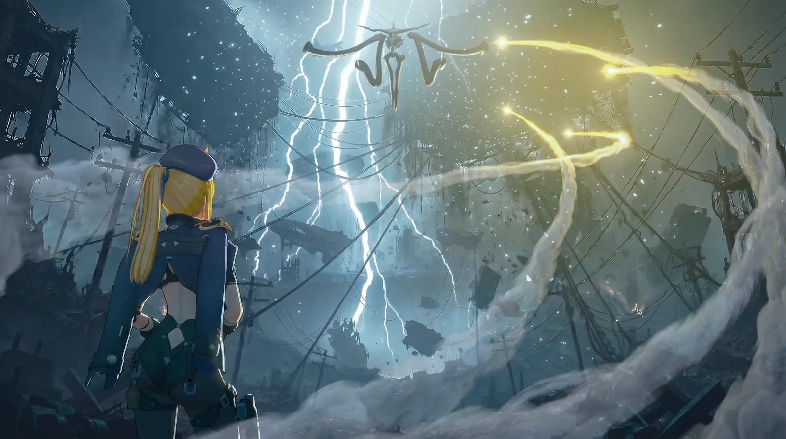
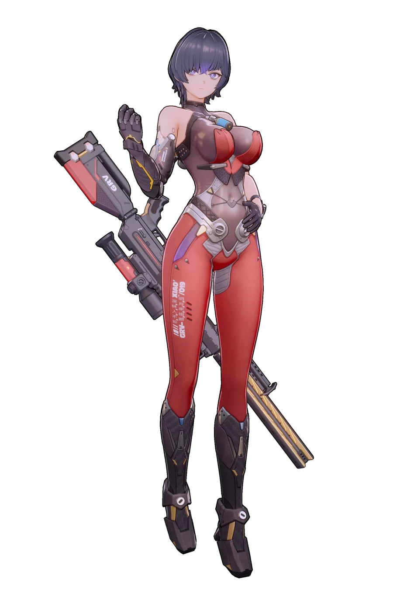
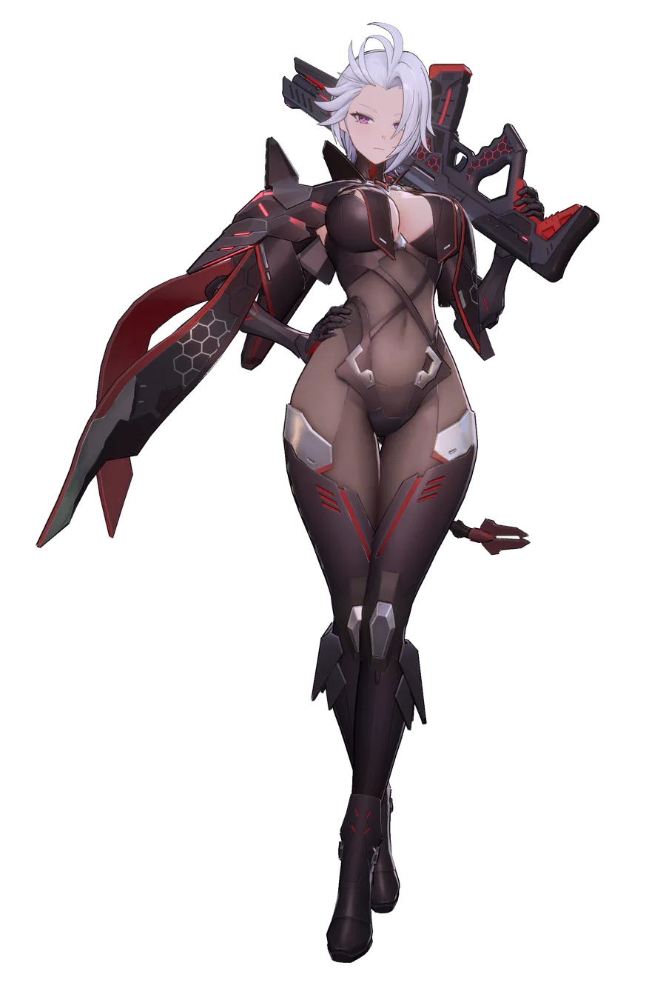
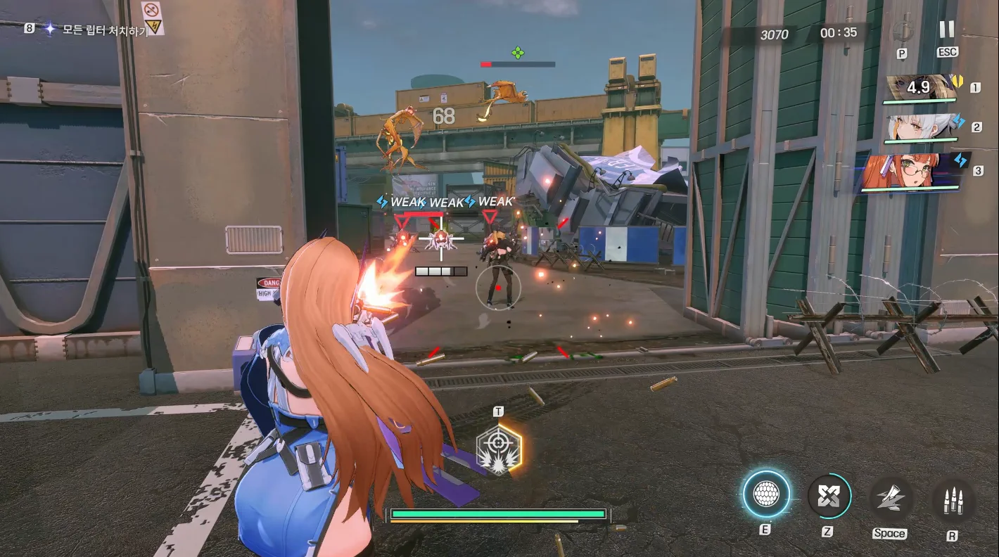
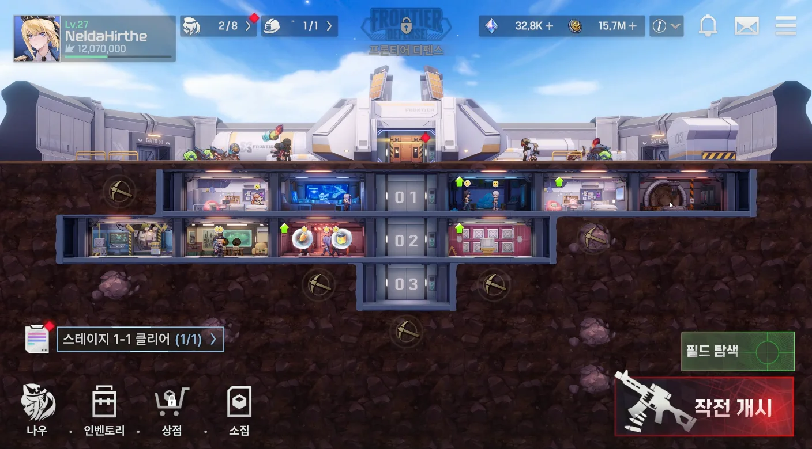
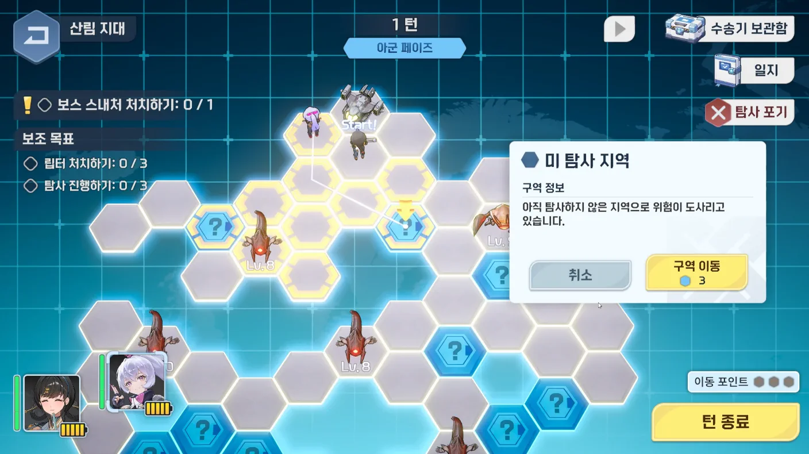
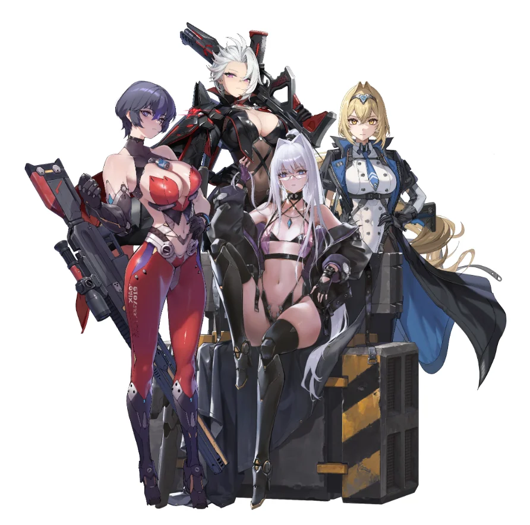

Story
스토리
외계 침략으로 쫓겨난 인류가 테라리움에서 지구 수복을 위해 만든 안드로이드 '나우'와 메카닉 병기 '모터에임'을 통해서 몰락한 가문을 재건하고 세계의 숨겨진 진실을 향해 나아갑니다.

 Game Pride Is Unlimited
Game Pride Is Unlimited

Overview
외계생명체
립터의 침략 이후, 인류는 지하 초대형 요새 테라리움으로 피신했다.
인간을 대신해 지상에서 싸우는 존재
전투 안드로이드 ‘나우(NAU)’와 메카닉 병기 ‘모터에임(MA)’.
무너진 세계
정부의 힘은 약해지고, 7대 가문은 권력을 차지하기 위해 서로를 견제한다.
몰락한 가문의 가주
주인공은 가문의 부활과 나우의 해방, 그리고 세계의 진실을 향해 나아간다.
Characters
Neural Android Unit
인류가 만들어낸 초신경 전투 안드로이드 유닛.
립터를 이기기 위해 최신 기술을 집약하여 만든 오버 테크놀로지의 정수이지만, 처음에 누가 어떻게 만들었는지는 알려져 있지 않다.
7대 가문은 각자가 만든 최고의 나우를 정부에 연결하여 세를 확장하려 하고 있다.



Combat
캐릭터가 잘 보이는 3인칭 슈팅 및 메카닉 스킬을 활용한 전술 전투가 이루어집니다.
최고의 타격감과 편리한 모바일 플레이를 통해 새로운 재미에 도전합니다.
Base
유저가 성장하는 거점이자 스토리 진행의 연결고리 역할을 하는 공간입니다.
연구, 생산, 인력 배치 등 전략적 운영 및 적의 공격에 대한 막아내야 합니다.


Field
기지 주위를 확장하며 영토 확장 합니다.
탐색, 자원, 부대 전투 등 다양한 필드 플레이 요소를 통해 또다른 성장방향을 제시합니다.
Story
외계 침략으로 쫓겨난 인류가 테라리움에서 지구 수복을 위해 만든 안드로이드 '나우'와 메카닉 병기 '모터에임'을 통해서 몰락한 가문을 재건하고 세계의 숨겨진 진실을 향해 나아갑니다.

